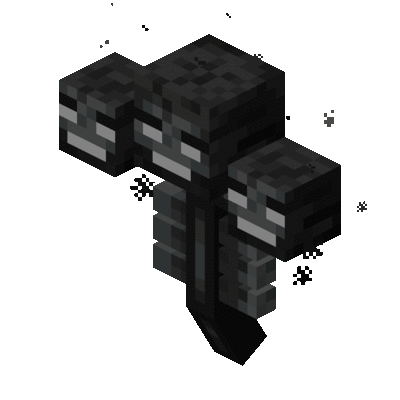
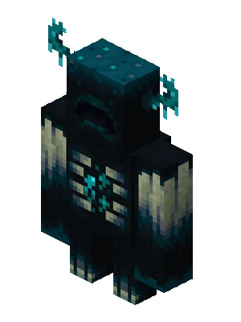

The Ender Dragon is the final boss of Minecraft, and the 1st boss ever added. Jumping into the portal it leaves behind on its death causes the credits to roll.
It has around 200 health on both Java Edition (PC) and Bedrock Edition (everything else). It is the largest entity in the game, with a bounding hitbox of 8 height, 16 width, and 16 depth.
Despite being considered the final boss by the game, it has the 3rd most health of any mob, being beaten bvy the other 2 on this list: The Wither and The Warden.
Killing it also allows easy access to the End Islands on the outskirts of the dimension. Being here allows access to unique blocks and other loot, such as Shulker Boxes and Elytras.
It spawns as soon as you enter The End dimension for the 1st time. To respawn it, you place 4 End Crystals on the middles of each side of the bedrock platform in the center.

The Wither was the 2nd boss ever added to Minecraft, and is the only source of Wither Stars. Using the stars, you can craft a powerful block called a Beacon, which can give permanent affects in its radius.
It has 300 health on Java Edition on any difficulty, and has changing health on Bedrock: 300 on Easy, 450 on Medium, and 600 on Hard, which makes it the healthiest boss on Bedrock. It's a medium-sized enitity, with a hitbox on Java of 3.5 tall, 0.9 wide and 1 deep, and one of 3 tall, 1 wide, and 1 deep on Bedrock.
This boss has the most differences between Java and Bedrock out of any mob in the game, coming in at around 10 differences on the wiki.
You summon it by using 4 Soul Sand or Soul Soil in a T shape, with 3 Wither Skeleton Skulls on top.
The Warden isn't technically a boss since it doesn't have a boss health bar, but a lot of the community considers it to be one. It doesn't drop anything particularly special, but its one of the only ways to get Skulk Catalysts.
It has 500 health on any difficulty for both Java and Bedrock, making it the healthiest on Easy & Medium for Bedrock, and on any difficulty for Java. It's a medium-sized entity, with a hitbox of 1 by 0.9 by 0.9
Unlike both the Ender Dragon and Wither, it doesn't unlock anything special upon its death. This was so players didn't have a need to kill it. However, it does have 2 unique mechanics. Since the Warden is supposed to be sightless, it tracks everything via sound and smell.
To summon the Warden, you have to activate what's called a Sculk Shieker, that generated naturally, 4 times or more.
